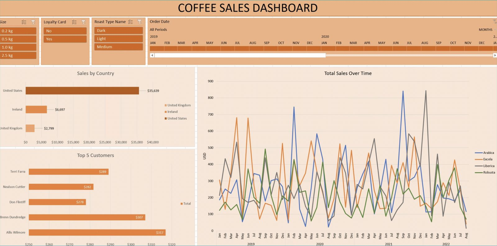

Microsoft Excel
Coffee Sales Dashboard

Goal
A single-sheet sales dashboard for a coffee retailer, built entirely in Excel. It analyzes sales trends, top customers, and performance across countries between 2019 and 2022, and it is filterable so the same sheet answers a question about a roast type, a size, or a single year without being rebuilt each time.
Process
The raw data arrived across separate order, customer and product tables. The orders table was enriched with XLOOKUP to pull customer name, email and country, and with INDEX and MATCH to bring in coffee type, roast, size and unit price. Dates were normalised, duplicates removed, and a calculated sales column derived from quantity and unit price so that every downstream figure traces back to one formula rather than to a hand-typed number.
The cleaned table then feeds pivot tables behind each visual: a time series of sales, a country ranking, and a top-customer list. Slicers for roast type, size and loyalty-card status, plus a timeline for the date range, are connected to every pivot so one selection moves the whole dashboard.
Key Questions Answered
- How have sales moved between 2019 and 2022, by coffee type?
- Which countries generate the most sales?
- Who are the top customers by total spend?
- How do roast type and package size affect sales volume?
- Do loyalty-card holders buy differently from non-holders?
Why it is in Excel
Because that is where this kind of question is usually asked. A dashboard that lives in a workbook can be opened, filtered and checked by anyone on the team without a licence, an account, or a refresh schedule. Being able to build one properly, with lookups and pivots rather than pasted values, is what makes the rest of the reporting stack trustworthy.
Please open it with Excel 2013 or later. The slicers and timeline need that version.